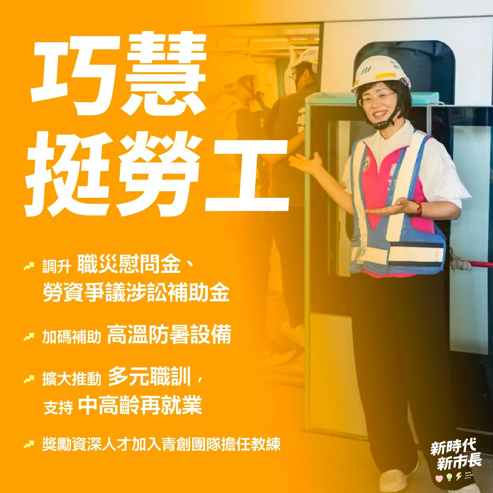
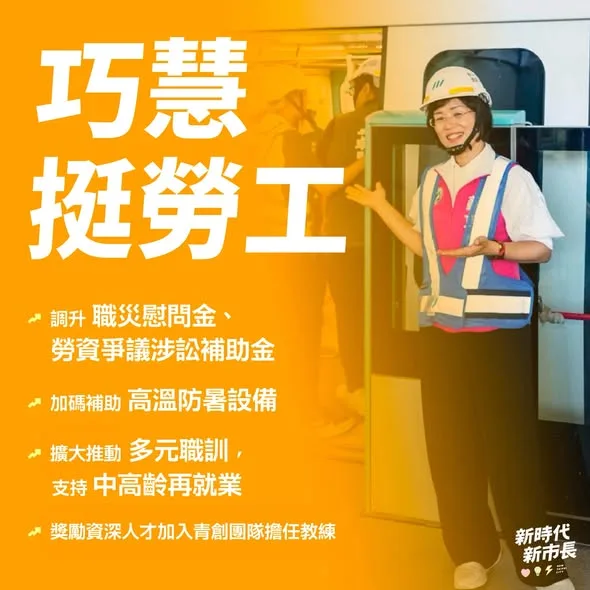
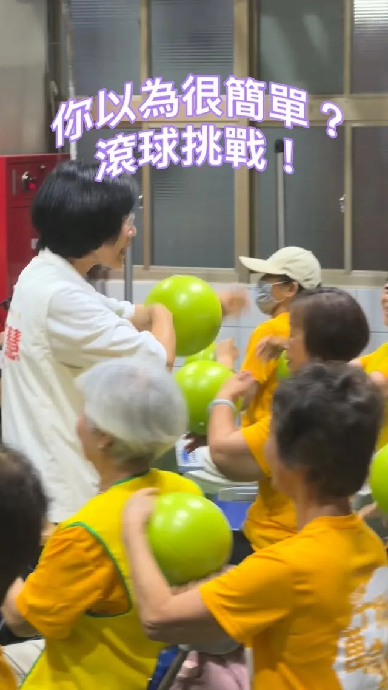

蘇巧慧su.chiaohui
@su.chiaohui:開箱新北第二彈：從前從前 很開心第一波的【你家隔壁】收到大家的熱烈迴響，這一次，我想帶大家循著時間留下的線索，走進新北的故事。 水獺媽媽這波將攜手鬼才繪本作家信子 @quack1106 的人氣角色「奇怪阿嬤」、人氣插畫家瑞秋廖 @rachelliao_illustration 畫的「呱鬆蛙蛙」，一樣設置5個藏寶點，將寶盒藏進承載著歷史記憶的角落。 大家快根據影片裡的線索，找到藏寶的地方，一起開箱新北的從前從前！
Accounts
| 平台 | 帳號 | 已收錄貼文 | 最後更新 |
|---|---|---|---|
| 官網 | https://chiao.tw/ | 19 | 2026-09-07 00:00 |
| https://www.facebook.com/chiaohui.su | 108 | 2026-09-10 10:46 | |
| https://www.instagram.com/su.chiaohui/ | 134 | 2026-09-11 09:00 | |
| YouTube | https://www.youtube.com/channel/UCBybqVtDU2YgADc8tBqUz5A | 78 | 2026-09-11 18:30 |
| LINE 官方帳號 | http://line.me/ti/p/%40suchiaohui | 0 | — |
| Threads | https://www.threads.com/@su.chiaohui | 158 | 2026-09-11 22:17 |
| Podcast | https://open.spotify.com/show/06fXdjNXspAe1QLML8EsAv | 7 | 2026-09-10 15:00 |
Timeline
顯示 504 / 504 則
@su.chiaohui:開箱新北第二彈：從前從前 很開心第一波的【你家隔壁】收到大家的熱烈迴響，這一次，我想帶大家循著時間留下的線索，走進新北的故事。 水獺媽媽這波將攜手鬼才繪本作家信子 @quack1106 的人氣角色「奇怪阿嬤」、人氣插畫家瑞秋廖 @rachelliao_illustration 畫的「呱鬆蛙蛙」，一樣設置5個藏寶點，將寶盒藏進承載著歷史記憶的角落。 大家快根據影片裡的線索，找到藏寶的地方，一起開箱新北的從前從前！

Let’s strive together to build a new era for New Taipei!
@su.chiaohui:「我現在很喜歡我自己，因為正在做喜歡的事，也確實感覺到自己能為別人帶來一些改變。」 談到家庭教育，巧慧和大家分享，比起升學或成就，她更在乎孩子能喜歡、擁抱自己的選擇與人生。 希望讓孩子慢慢走出自己的路，有自信的說：「我喜歡現在的我。」 🔗完整報導：https://www.parenting.com.tw/article/6002551

@su.chiaohui:前陣子我到永和，和一群優秀的文字工作者一起吃美食、聊聊天！ 台灣有太多厲害的創作者與故事，不管是以漫畫重現台灣百年茶路，還是透過小說把在地滋味與文化推向國際，我希望能做大家的最強後盾，替大家找資源、搭建舞台。 我會繼續努力，讓更多好故事與人才被更多人看見！
Qiaohui Has Your Back! Supporting the Caregivers

做勞工最大的靠山！挺勞工、顧工會、實質照顧每個家庭！ 感謝各行各業的朋友們站出來相挺，為我成立後援會。勞工挺巧慧，巧慧更要用具體政見照顧所有市民： ✅巧慧挺勞工 ・ 調升職災慰問金、勞資爭議涉訟補助 ・ 加碼補助高溫防暑設備 ・ 擴大推動多元職訓，支持中高齡再就業 ・ 獎勵資深人才加入青創團隊擔任創業教練 ✅巧慧挺工會 ・ 改善工會辦公空間 ・ 調高職業工會行政事務費、會務經費 ・ 建立市府與工會直接對話機制 ✅巧慧挺家庭 ・國中小免費營養午餐 ・0-6歲免門診與住院部分負擔 ・早產兒3萬元照顧津貼 ・鼓勵企業組隊設托，友善職場獎勵金最高100萬元 ・長輩假牙補助最高5萬元 ・敬老卡升級1000點，每月不會歸零 我會繼續努力，讓大家好好生活、安心工作，在新北安居樂業！

開箱新北小遊戲！你不知道的好所在✨ 因為行程很多，我每天在新北到處跑，常會經過充滿驚喜的角落，我都會想：「我一定要讓更多人知道這裡！」 所以這次，我想用一個新的方式，邀請大家真的打開新北、重新認識新北。我邀請了8位知名的插畫家、漫畫家，和我一起打造了「開箱新北」藏寶計劃！ 【開箱新北第一彈：你家隔壁】 很多時候，熟悉的風景裡，反而藏著我們忽略的故事。 第一彈的藏寶企劃，我攜手人氣創作者 HOM 與小心臟LittleHeart，設置了5個藏寶點，要帶大家重新認識那些「以為很熟悉、其實不太了解」的日常角落。 大家快根據影片裡的線索找到我和 蔡英文 Tsai Ing-wen #小英總統 藏寶藏的地方，開箱寶盒！ 藏寶盒裡面有什麼？ 🎁水獺媽媽與HOM、小心臟限量「聯名壓克力鑰匙圈」（2款各3個，手腳慢就沒了！） 🎁水獺媽媽與HOM、小心臟獨家「聯名貼紙」（2款各10張） 🌟每位抵達的參加者可以領取「一份」小禮物唷～ 歡迎各位新北在地玩家，一起從你家隔壁開始，更深入地認識新北！
Make Every New Taipei Citizen Proud of New Taipei!

今天我和蕭美琴 Bi-khim Hsiao副總統在金山挖芋頭，也和在地青年、農會聊聊對金山未來的想像！ 我們都是芋頭派的喔🤩（芋頭派的舉手～🙋🏼
水獺媽媽樂園大變身！這次我們把數學變好玩！#水獺媽媽數感樂園 在新店開園啦！ 這次，我和 #數感實驗室 合作，準備了滿滿的數學闖關遊戲，要讓大朋友、小朋友不僅在假日時，盡情玩樂享受寶貴的親子時光，更能從中找回探索知識的樂趣！ 🗓️9月20日（日）上午9:00至12:00 📍新店耕莘專校 學生活動中心 （新店區民族路112號） 🎟️免費入場

@su.chiaohui:挺家具產業！解決業界痛點、助攻品牌轉型！ 我和新北家具相關產業認識超過十年，深知每一件家具背後，都是一代代職人累積的技術和心血。當產業面對廢棄家具清運的困難、低價進口產品競爭，以及品牌轉型等挑戰，未來的市政府更應該站出來，成為家具產業的後盾！ 很感謝今天家具產業的朋友們為我成立後援會，我也提出三項政見，期望能實質照顧大家，一起突破產業困境： ✅ 擴大巨大廢棄物去化量能 ✅ 市府帶頭支持新北在地及MIT產品，協助業者取得各項標章，提升競爭力 ✅ 推動家具產業加入「中小型企業創新研發計劃」，協助業者建立自有品牌 產業有技術，政府就幫忙找資源；產業有困難，政府就一起找方法。我會繼續努力，讓新北家具產業傳承好手藝、打造好品牌，在新時代開拓更大的市場！

@su.chiaohui:一起拚，拚出新北新時代！ 感謝 @william_chingte 總統、@tsai_ingwen 小英總統、@chenchimai 市長，以及到現場支持我們的2萬名市民！ 未來的新北，除了基礎建設要做得又快又好，更要運用新科技、新技術和新觀念來一起推動市政，讓企業願意投資新北、人才願意留在新北，打造專屬新北市的「城市品牌」，讓在地人、外地人都喜愛這座城市。

欸？挺會找的欸～ #躲貓貓 #變色龍 #水獺媽媽樂園#mecchachameleon

前陣子我到永和，和一群優秀的文字工作者一起吃美食、聊聊天！ 台灣有太多厲害的創作者與故事，不管是以漫畫重現台灣百年茶路，還是透過小說把在地滋味與文化推向國際，我希望能做大家的最強後盾，替大家找資源、搭建舞台。 我會繼續努力，讓更多好故事與人才被更多人看見！

深深感謝無數個家庭背後，撐起日常的每一位照顧者。未來我希望帶領市府 #照顧照顧者，全力做大家的靠山！ 我們要簡化行政流程、加發津貼與進修補助，提供最實質的支持。#新時代照顧也要升級！我們要發展 #AI智慧照顧，運用科技減輕照顧負擔、推動居家服務與輔具一次到位，帶入專業復能服務，出院照顧不再手忙腳亂。 新北邁向新時代，我們一起讓這座城市更溫暖、更宜居！

做勞工最大的靠山！挺勞工、顧工會、實質照顧每個家庭！ 感謝各行各業的朋友們站出來相挺，為我成立後援會。勞工挺巧慧，巧慧更要用具體政見照顧所有市民： ✅巧慧挺勞工 ・ 調升職災慰問金、勞資爭議涉訟補助 ・ 加碼補助高溫防暑設備 ・ 擴大推動多元職訓，支持中高齡再就業 ・ 獎勵資深人才加入青創團隊擔任創業教練 ✅巧慧挺工會 ・ 改善工會辦公空間 ・ 調高職業工會行政事務費、會務經費 ・ 建立市府與工會直接對話機制 ✅巧慧挺家庭 ・國中小免費營養午餐 ・0-6歲免門診與住院部分負擔 ・早產兒3萬元照顧津貼 ・鼓勵企業組隊設托，友善職場獎勵金最高100萬元 ・長輩假牙補助最高5萬元 ・敬老卡升級1000點，每月不會歸零 我會繼續努力，讓大家好好生活、安心工作，在新北安居樂業！

開箱新北小遊戲！你不知道的好所在✨ 因為行程很多，我每天在新北到處跑，常會經過充滿驚喜的角落，我都會想：「我一定要讓更多人知道這裡！」 所以這次，我想用一個新的方式，邀請大家真的打開新北、重新認識新北。我邀請了8位知名的插畫家、漫畫家，和我一起打造了「開箱新北」藏寶計劃！ 【開箱新北第一彈：你家隔壁】 很多時候，熟悉的風景裡，反而藏著我們忽略的故事。 第一彈的藏寶企劃，我攜手人氣創作者 @hom_comicart #HOM 與 @jeoyu #小心臟，設置了5個藏寶點，要帶大家重新認識那些「以為很熟悉、其實不太了解」的日常角落。 大家快根據影片裡的線索找到我和 @tsai_ingwen #小英總統 藏寶藏的地方，開箱寶盒！ 藏寶盒裡面有什麼？ 🎁水獺媽媽與HOM、小心臟限量「聯名壓克力鑰匙圈」（2款各3個，手腳慢就沒了！） 🎁水獺媽媽與HOM、小心臟獨家「聯名貼紙」（2款各10張） 🌟每位抵達的參加者可以領取「一份」小禮物唷 歡迎各位新北在地玩家，一起從你家隔壁開始，更深入地認識新北！

【水獺媽媽巧巧話】讓我安靜五分鐘｜親子關係｜家庭生活｜兒童繪本

新北衛星變繁星，打造 #新北光榮感！ 林姓宗親會的團結與榮譽感，也是我對新北的期待。我希望建立屬於新北人的 #城市認同感，讓每一位新北市民，以新北為榮。 新北有都市區，也有山海城鎮。未來我會成立 #都市更新局，給市民更安全、舒適的居住環境，也會透過 #新皇冠海岸 與 #鑽石山城 計畫，打造新北國際觀光新品牌。 新北29區，每一區都是一顆閃耀的星星。新時代、新市長，我會帶領新北大步向前，新北市民會以新北為榮！
水獺媽媽樂園大變身！這次我們把數學變好玩！#水獺媽媽數感樂園 在新店開園啦！ 這次，我和 #數感實驗室 合作，準備了滿滿的數學闖關遊戲，要讓大朋友、小朋友不僅在假日時，盡情玩樂享受寶貴的親子時光，更能從中找回探索知識的樂趣！ 🗓️9月20日（日）上午9:00至12:00 📍新店耕莘專校 學生活動中心 （新店區民族路112號） 🎟️免費入場

【Otter Mom's Little Chats】Calling My Cat | Pet Companionship | Anticipation and Discovery | Child...

一起拚，拚出新北新時代！ 感謝 @william_chingte 總統、 @tsai_ingwen 小英總統、 @chenchimai 市長，以及到現場支持我們的2萬名市民！ 未來的新北，除了基礎建設要做得又快又好，更要運用新科技、新技術和新觀念來一起推動市政，讓企業願意投資新北、人才願意留在新北，打造專屬新北市的「城市品牌」，讓在地人、外地人都喜愛這座城市。

Giving More Great Stories and Talent the Spotlight!
【小女孩好想要有一隻貓來抱一抱，像個鬆鬆軟軟大毛球一樣的貓。他能如願嗎？】 適讀年齡：4歲以上 ✏️ 本集台語小教室紙箱、球、飼料、罐頭 《呼喚我的貓》文：蜜雪兒．羅賓森 圖：李瑾倫 小女孩好想要有一隻貓來抱一抱，像個鬆鬆軟軟大毛球一樣的貓。小女孩準備了橡皮球、貓薄荷、紙箱子…… 終於，奶奶家養的黑皮帶了許多朋友來。一整天都有這麼多貓咪陪伴，還有一隻窩在襪子的抽屜裡，真是太棒了！只不過，這些都是別人家的貓，心急的主人們還在街邊牆上貼了尋貓啟事，該怎麼辦呢？ 故事由上誼文化授權使用 👇 繪本這裡看：https://www.books.com.tw/products/0010810177? 👇 更多親子大小事，請在 FB 搜尋： 水獺媽媽巧慧與他的好朋友https://www.facebook.com/ottermamachiao 👇 寫信給水獺媽媽：100925 立法院郵局 第 27 號信箱 水獺媽媽收
深深感謝無數個家庭背後，撐起日常的每一位照顧者。未來我希望帶領市府 #照顧照顧者，全力做大家的靠山！ 我們要簡化行政流程、加發津貼與進修補助，提供最實質的支持。#新時代照顧也要升級！我們要發展 #AI智慧照顧，運用科技減輕照顧負擔、推動居家服務與輔具一次到位，帶入專業復能服務，出院照顧不再手忙腳亂。 新北邁向新時代，我們一起讓這座城市更溫暖、更宜居！

體育日 PK大賽 #體育日 #滾球 #競技

Unboxing New Taipei Vol. 1: Right Next Door

今天我和 #蕭美琴 副總統在金山挖芋頭，也和在地青年、農會聊聊對金山未來的想像！ 我們都是芋頭派的喔🤩（芋頭派的舉手～🙋🏼

新北衛星變繁星，打造 #新北光榮感！ 林姓宗親會的團結與榮譽感，也是我對新北的期待。我希望建立屬於新北人的 #城市認同感，讓每一位新北市民，以新北為榮。 新北有都市區，也有山海城鎮。未來我會成立 #都市更新局，給市民更安全、舒適的居住環境，也會透過 #新皇冠海岸 與 #鑽石山城 計畫，打造新北國際觀光新品牌。 新北29區，每一區都是一顆閃耀的星星。新時代、新市長，我會帶領新北大步向前，新北市民會以新北為榮！
巧觀點 和大家報告我的客家政見！ 共下打拚、全力支持！非常感謝客家鄉親好朋友們之前組成挺巧慧後援會！我也再次和大家報告我們的客家政見： 2026.09.07